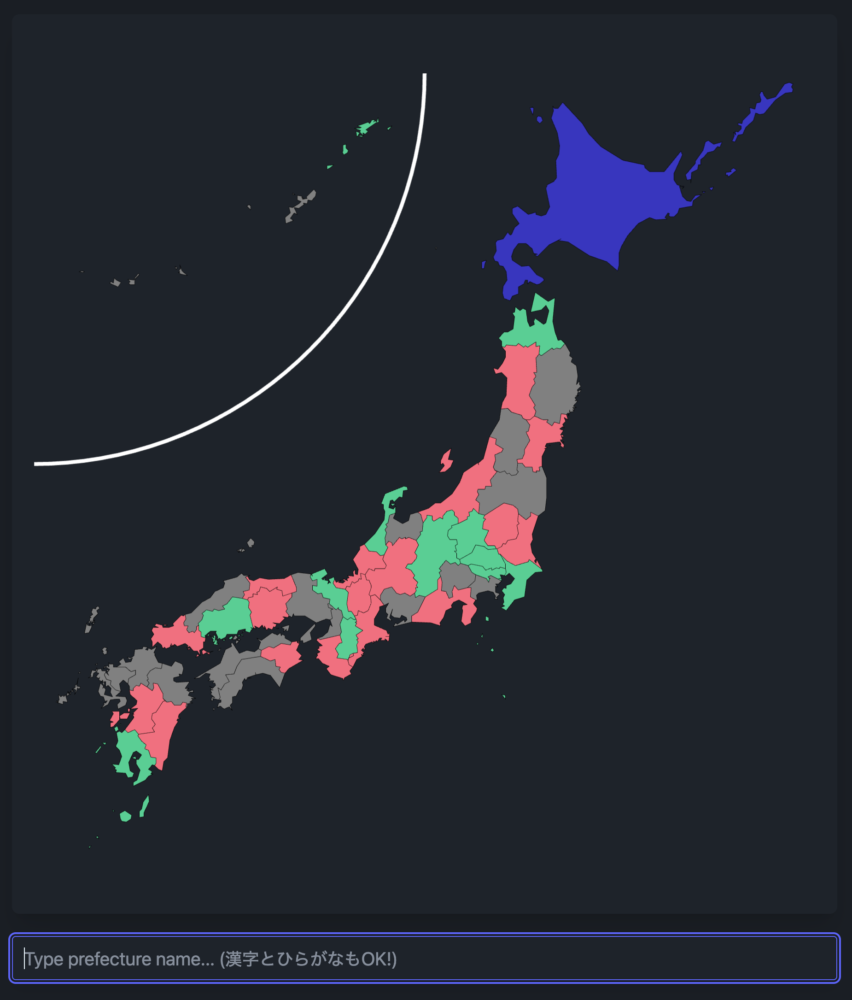

After going on a holiday with my wife’s cousin and her sons, I decided to build a few games to memorize things I’ve always wanted to know by heart, namely: the flags of the world, the prefectures of Japan, and the provinces of Spain. So I decided to build a game with Elm and what I learnt along the way is what I’ll be describing in this blogpost, although all games follow a very similar structure.
The Types
The whole code for the Japan prefectures game can be found here, it’s completely Open Source! The first thing I wanted to do is define the model of the game:
type Model
= Idle
| Playing GameState (Toast.Tray Toast)
| Finished Score (Toast.Tray Toast)One benefit of working with Algebraic Data Types (ADT for short), is that you can define really nicely the minimal representation of data you want to have for your whole domain. In the above type, the game only has 3 phases: idle (the initial screen, where you select the game mode you want to play), the game state while you are actually playing and the finished state, where you just want to show the score to the user and maybe, the last toast message telling them wether their last guess was right or wrong.
Let me introduce you now to the Msg type of the game:
type Msg
= Start
| Restart
| ToastMsg Toast.Msg
| OnInput GameState
| CheckAnswer GameState (Toast.Tray Toast)
| RandomPrefecture Score (List Prefecture)This represents all the possible actions that can happen in your app, as you can see, there is one message that we need to display toast messages (ToastMsg), two others that need the GameState (OnInput and CheckAnswer) and the most important one of them: the one I use to generate the random list of prefectures to ask in the game: RandomPrefecture.
For reference, the important GameState type is defined as follows:
type alias GameState =
{ currentPrefecture : Prefecture
, remainingPrefectures : List Prefecture
, guessedPrefectures : List Prefecture
, score : Score
, guess : String
}This was only the initial design, later we will discuss how it was greatly improved using a different data structure!
Dealing with Randomness
As you already know, dealing with random values is a side effect, and Elm, being a purely functional programming language, does not like those, but we have our way of purely handling that, this was my first implementation:
Start ->
let
prefectureGenerator : Random.Generator ( Maybe Prefecture, List Prefecture )
prefectureGenerator =
Random.List.choose allPrefectures
in
( model, Random.generate (RandomPrefecture (Score 0 0)) prefectureGenerator )I used the choose function from the random-extra package, which has the following signature:
choose : List a -> Generator ( Maybe a, List a )And the logic was quite simple: every time I ask a user for a prefecture, I would just choose it from the list, and this function already extracts it from the remaining of the list. The Maybe in the first half of the tuple ( Maybe Prefecture , List Prefecture ) means that if the chosen option is a Nothing, you run out of options and you can finish the game. What was the downside of this approach? I needed to perform N number of side effects, where N is the length of the list of things I want to memorize in the game. Is there a cleaner way?
Start ->
let
prefectureGenerator : Random.Generator (List Prefecture)
prefectureGenerator =
-- the whole game revolves around this!
Random.List.shuffle allPrefectures
in
( model, Random.generate (RandomPrefecture (Score 0 0)) prefectureGenerator )Yes, following the game logic, I just need to scrumble the list once! And therefore, I can just use the shuffle function from the same package and, since a List in Elm is simply a Linked List, I can List.head every item from the remaining list of prefectures in the game until I run out of options, a nice improvement!
Enter the Zipper! 🤐
Conceptually, you might have noticed that the above GameState type seems a bit redundant: if we need to keep track of a list of guessed, not yet guessed, and current asked prefecture, do we have a better data structure that represents that? 🤔
type Zipper a
= Zipper (List a) a (List a)Indeed, the structure I really want is a Zipper! A zipper always has a focused item, a List before and after that, so this represents really nicely what I wanted to acomplish:
type alias GameState =
{ prefectures : Zipper Prefecture
, score : Score
, guess : String
}A few changes I had to do to the logic of the game were, first in the way I initialize the game state:
RandomPrefecture score (p :: ps) ->
( Playing (GameState (Zipper.fromCons p ps) score "") emptyTray, Cmd.none )
RandomPrefecture score [] ->
( Finished score emptyTray, Cmd.none )As you can see, since pattern matching is the way we do everything in Elm, I can construct nicely my first zipper when I come back from the random shuffle function by just using Zipper.fromCons.
And then the update function after we guess every prefecture in the game:
( case Zipper.next updatedCurrentPrefecture of
Just remainingPrefectures ->
Playing (GameState remainingPrefectures updatedGameScore "") tray
Nothing ->
-- if there is no Zipper.next, the game is over!
Finished updatedGameScore tray
, Cmd.none )Every time we guess a prefecture, we move to the next, and if that operation fails, it means we have finished the game!
Separation of concerns
I added a few unit tests to my game, and I ended up with the following code:
all : Test
all =
describe "getPrefectureStatus tests"
[ test "current prefecture is focused -> color Focused" <|
\_ ->
let
zipper : Zipper Prefecture
zipper =
Zipper.singleton aomori
expectedStyles : List (Svg.Attribute msg)
expectedStyles =
-- this is bad!! 🤢
[ SvgAttr.fill "#422ad5"
, SvgAttr.class "animate-pulse"
]
in
Expect.equal expectedStyles (getPrefectureStatus 2 zipper)
, test "prefecture not yet asked -> color NotAsked" <|
-- ... more tests
]What was wrong with this code? Well, I was mixing visual representation of the game with the actual game logic, so, I needed to rewrite my functions to make my life easier for myself:
fillColor : Int -> Zipper Prefecture -> List (Svg.Attribute msg)
fillColor id =
getPrefectureStatus id >> statusToColor
getPrefectureStatus : Int -> Zipper Prefecture -> Status
getPrefectureStatus id zipper =
-- implementation of this function is not relevant now...And the nicer resulting code looks now like this:
all : Test
all =
describe "getPrefectureStatus tests"
[ test "current prefecture is focused -> Focused state" <|
\_ ->
let
zipper : Zipper Prefecture
zipper =
Zipper.singleton aomori
in
Expect.equal Focused (getPrefectureStatus 2 zipper)
, test "prefecture not yet asked -> NotAsked state" <|
-- ... more tests
]One nice implication of using functional languages, is that all the functions are pure, which means for every input I can always guarantee the same output, and that makes unit testing a breeze! ✨
The CI Setup
I have been learning Nix ❄️ recently for my Haskell development, so I wanted to use Nix too for my Elm needs. I updated my elm-parcel-template to now use Nix and, as a nice side effect, I have a FREE, ZERO CONFIG CI thanks to nix-ci.com (it figures out automagically what it needs to do based on your flake.nix file, no extra config needed! ✨), check it out if you are interested, it is a really nice project!
Acknowledgements
I would like to thank a few people who helped me improve a few things in these games, namely:
- Aitor Soto for making the game actually playable and nice! 🙇🏼♂️
- Robert K. Bell from the Elm Slack for his help setting up Nix + Elm 🌳❤️
- Tom Sydney Kerckhove, for creating the awesome Nix CI! 🙌🏻
If you liked this blogpost and would like me to continue writing technical content, please consider sponsoring my work, share it in your social networks and follow me on Twitter and BlueSky 🦋! 🙌🏻